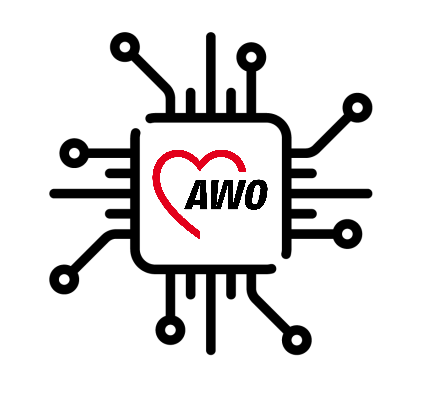

Ihre Fragen im Mittelpunkt
Unsere KI-Strategie zielt darauf ab, den digitalen Wandel in der Wohlfahrtspflege durch den gezielten Einsatz von Künstlicher Intelligenz zu fördern.

Unsere KI-Strategie zielt darauf ab, den digitalen Wandel in der Wohlfahrtspflege durch den gezielten Einsatz von Künstlicher Intelligenz zu fördern.